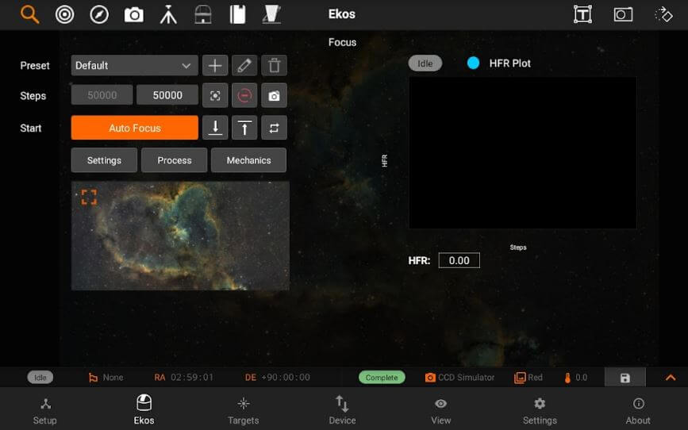
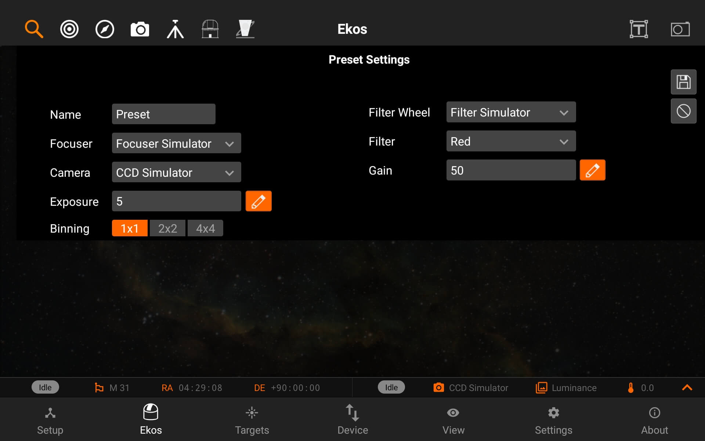
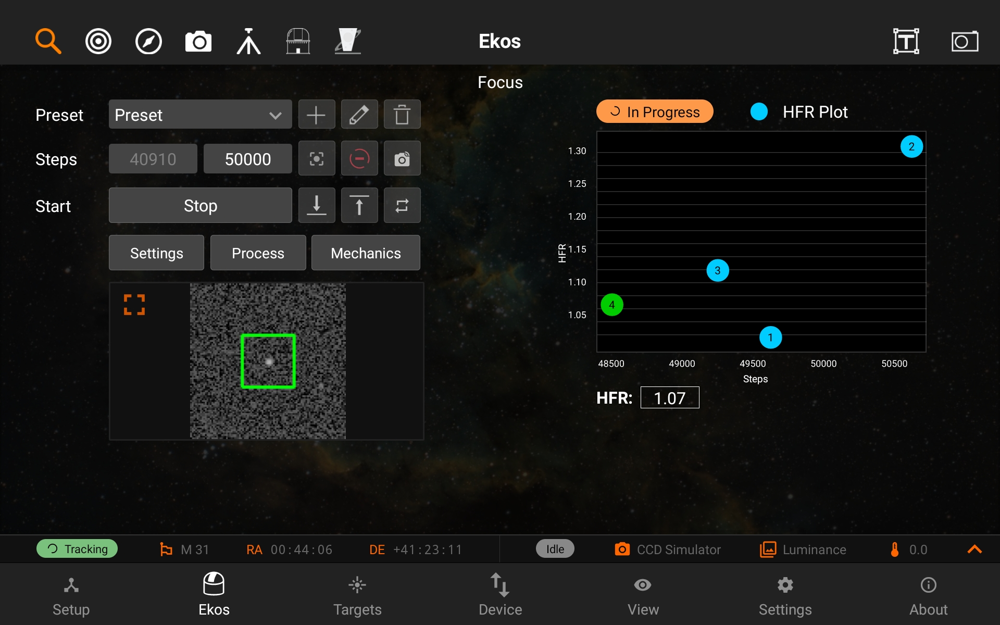
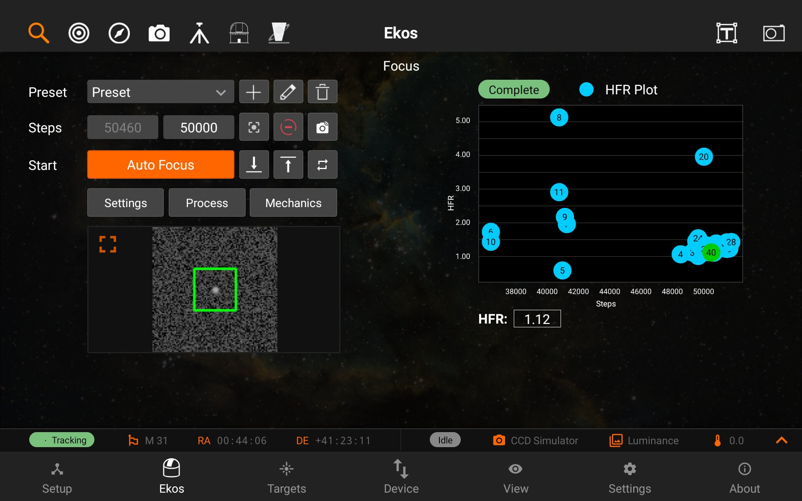
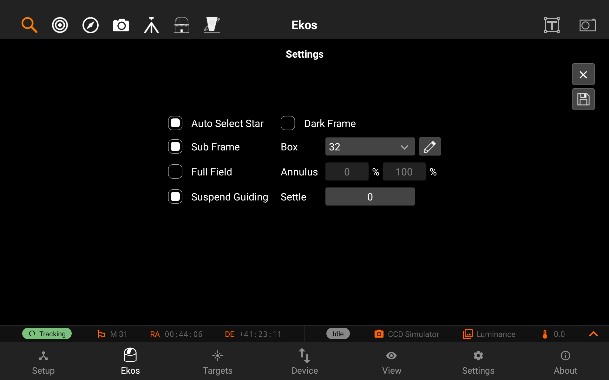
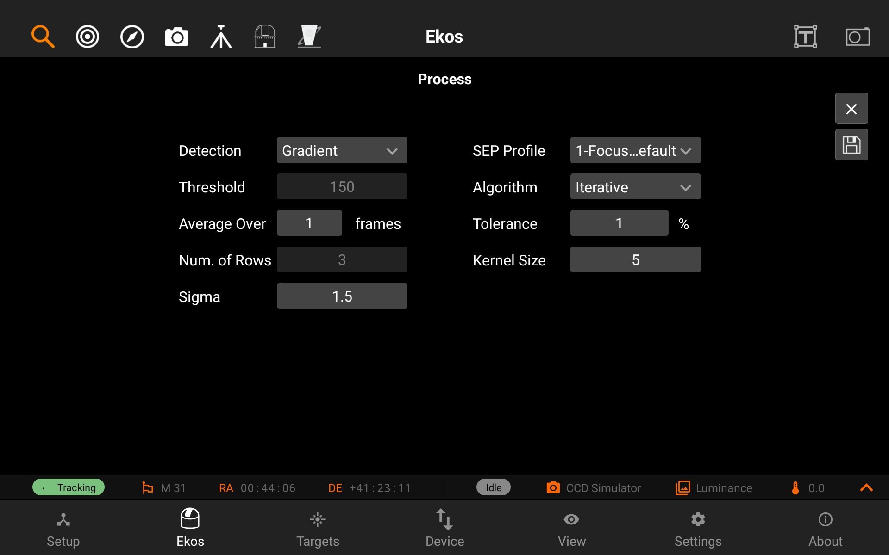
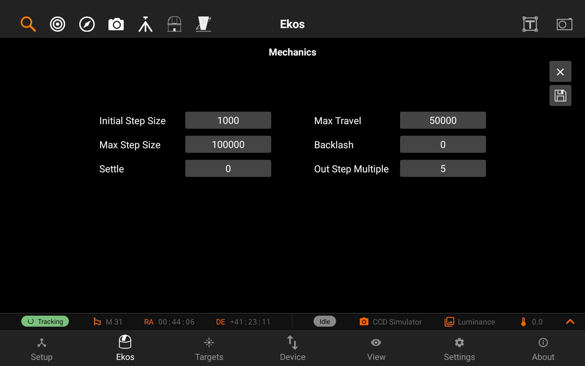

Focus
The Focus module allows you to do focusing using your focuser, it has the following features:
- Presets: you can save an unlimited amount of presets, which have all the camera settings needed for focusing.
- Goto absolute motor step
- In/Out step movement: can be edited in Mechanics settings.
- Preview
- Loop
- Advanced options (settings, process, mechanics)
- Image viewer
- HFR Plot

Preset Settings
You can add new preset, edit or delete presets, by tapping on the + button, the pencil button or the trash button.
Focus Presets has the following structure:
- Preset name
- Focuser
- Camera
- Exposure
- Binning
- Filter Wheel
- Filter
- Gain/ISO

Auto focusing
You can do auto focusing by either keeping the preset setting as default or choosing an existing preset and then tapping on Auto Focus. The image viewer will show you the current image being captured by your camera, with a square around the detected star. An HFR Plot is also available on the right side of the screen to inform you about the current motor step and the HFR (Half-Flux-Radius). The blue points are the previous focus points, and the green point is the latest focus point. The HFR value is displayed under the HFR Plot.

When the Auto Focusing is done, the status badge above the HFR Plot will turn to green and say "Complete".

Settings
You can change lots of settings by going to the Settings, Process, and/or Mechanics setting pages.
The Settings page has the following options:
- Auto Select Star: Automatically detect and select best star for guiding in the image.
- Subframe: Subframe around the focus star during the autofocus procedure. Enabling subframing can significantly speed up the focus process.
- Full field: Measure average HFR from all stars combined in a full frame. This method defaults to the Centroid detection, but can use SEP detection too. Its performance decreases as the number of stars increases.
- Suspend Guiding: Suspend Guiding while autofocus in progress. If the focus process can disrupt the guide star (e.g. when using Integrated Guide Port IGP whereas the guider is physically attached to the primary CCD), then it is recommended to enable this option. When using Off-Axis guider, then this option is not necessary.
- Dark Frame: Check this option to capture a dark frame if necessary and perform dark-frame subtraction. This option can be useful in noisy images.
- Box: Sets the box size used to enclose the focus star. Increase if you have very large stars.
- Annulus: During full field focusing, stars which are inside this percentage of the frame are filtered out of HFR calculation (default 0%). Detection algorithms may also have an inherent filter.
- Settle: Sets the amount of seconds to wait before resuming guiding.

Process
The Process page has the following options:
- Detection: Select star detection algorithm. Each algorithm have its strengths and weaknesses. It is recommended to keep the default value unless it fails to properly detect stars.
- SEP: Source Extractor and Photometry, an efficient source detection method based on Source Extractor (Bertin and Arnouts 1996; Bertin 2016). See SEP: Source Extractor as a library in the Journal of Open Source Software.
- Centroid: a source detection based on estimating star mass around signal peaks.
- Gradient: a single source detection based on the Sobel filter. Initial or full-field analysis will use SEP instead of this method.
- Threshold: a single source detection based on pixel values. Initial or full-field analysis will use SEP instead of this method.
- Bahtinov: This is useful for users who do not have a motorized focuser and prefer to focus manually with the aid of a Bahtinov Mask. After capturing an image in the focus module with the Bahtinov mask algorithm selected, Ekos would analyze the images and stars within it. If Ekos recognizes the Bahtinov star pattern, it will draw lines over the star pattern in circles on the center and on an offset to indicate the focus.
- Threshold: Threshold percentage value is used for star detection using the Threshold detection algorithm. Increase to restrict the centroid to bright cores. Decrease to enclose fuzzy stars.
- Effect: Apply filter to image after capture to enhance it for preview purposes. It is highly advisable to turn off any effects during the focusing process as it may interfere with HFR calculations.
- Kernel size: This is the gaussian blur kernel size. Used for blurring the image before for instance the Bahtinov edge detection.
- Sigma: This is the gaussian blur sigma value. Used for blurring the image before for instance the Bahtinov edge detection.
- Algorithm: Select the autofocus process algorithm:
- Iterative: Moves focuser by discreet steps initially decided by the step size. Once a curve slope is calculated, further step sizes are calculated to reach optimal solution. The algorithm stops when the measured HFR is within percentage tolerance of the minimum HFR recorded in the procedure.
- Polynomial: Starts with iterative method. Upon crossing to the other side of the V-Curve, polynomial fitting coefficients along with possible minimum solution are calculated. This algorithm can be faster than purely iterative approach given a good data set.
- Linear: Samples focus inward in a regular fashion, using 2 passes. The algorithm can be slow, but it is more resilient to backlash. Start with the focuser positioned near good focus. Set Initial Step Size and Max Travel for the desired sampling interval and range around start focus position. Tolerance should be around 5%.
- Tolerance: The tolerance percentage values decides when the autofocus process stops in the Iterative algorithm. During the autofocus process, HFR values are recorded, and once the focuser is close to optimal position, it starts measuring HFRs against the minimum recorded HFR in the sessions and stops whenever a measured HFR value is within % difference of the minimum recorded HFR. Decrease value to narrow optimal focus point solution radius. Increase to expand dsolution radius.
|
Caution |
|
|
|
Setting the value too low might result in repetitive loop and would most likely result in a failed autofocus process. |
- Average over: Sets the number of frames to capture in order to average the HFR value at the current focuser position.
- Num. of rows: The number of rows set in this field will be combined in the Bahtinov max average calculation. Changing this value might help to match the Bahtinov lines on the star pattern more accurately.

Mechanics
The Mechanics page has the following options:
- Initial Step size: Initial step size in ticks to cause a noticeable change in HFR value. For timer based focuser, it is the initial time in milliseconds to move the focuser inward or outward.
- Max Step size: The maximum single step size the algorithm is allowed to command as it searches for the critical focus zone. The calculated step size would be limited to this maximum value.
- Settle: Sets the amount of seconds to wait after moving the focuser before capturing the next image during Auto Focus.
- Max Travel: Maximum travel in ticks before the autofocus process aborts.
- Backlash: Number of average frames to capture. During each capture, an HFR is recorded. If the instantaneous HFR value is unreliable, you can average a number of frames to increase the signal to noise ratio.
- Out Step Multiple: This is the number that is multiplied by initial-step-size to get the number of outward steps that the Linear Focus algorithm moves away from the initial position at the start of focusing.
